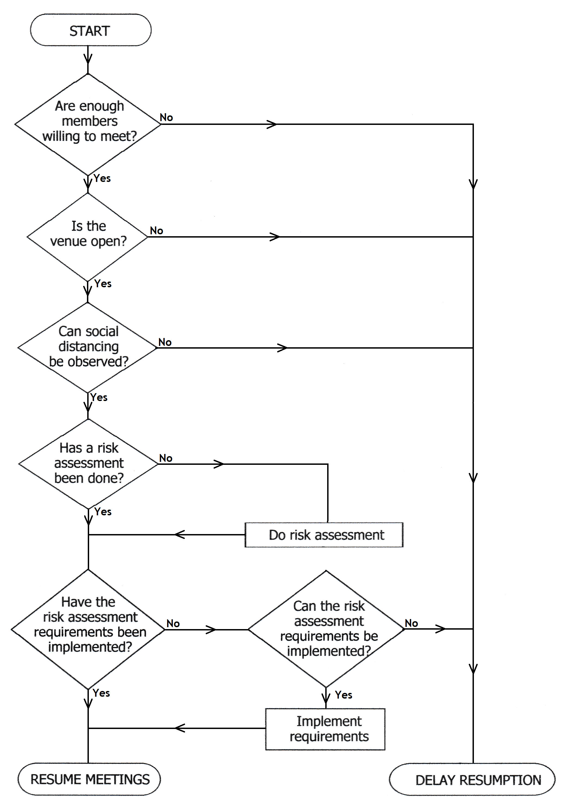

Covid-19 - Advice on Resumption of Meetings
|
As lockdown restrictions are eased and various types of venues are able to open again, societies may be looking at the possibilities of resuming meetings. However, the view of the FRMS committee is that whilst we are keen to see a resumption of society activities caution is necessary when considering such a move. At the time of writing (late July) the official advice is that social distancing of “1 metre plus” should be observed. This is open to interpretation but may be seen as meaning that the recommended 2 metre distance may be reduced to 1 metre provided additional precautions (the “plus”) are taken, such as wearing face coverings. There are, though, other factors to take into consideration. A fair proportion of the members of our affiliates may be considered to be “at risk” and within that category will be some who are shielding. The actual numbers will vary between societies but there may well be societies where most of the members would be unable, or reluctant, to attend because they are at risk. But even with the potential for full attendance problems may arise with the use of the venue. Many of our societies meet on church premises; churches are now able to open but are subject to strict requirements not only on social distancing but on maintaining a clean and safe environment - a rigorous risk assessment process must be completed before opening and, once open, activities within the building are restricted. Restrictions also apply to any other users of the building, and the church may require users also to complete the risk assessment process. Similar rules will apply to other communal venues such as village halls and social clubs. Particular
points which may emerge in following the requirements include, but are
not limited to: (i) hand sanitisers need to be freely available; (ii)
items such as door handles and light switches should be touched a little
as possible - this can include the society's equipment; (iii) if printed
handouts such as programme notes are used individual members should
retain their copies and take them home for disposal; (iv) presenters
should use amplification if anything louder than their normal speaking
voice needs to be heard; (v) interval refreshments may not be practicable
unless members bring their own. To summarise, societies should consider
Update 15th October 2020 With the three-tier system, and the possibility of local lockdowns, now operating in some areas of England, and different rules in Scotland and Wales, it is not possible for the FRMS Committee to give definitive advice on the possible resumption of meetings. The flowchart below is still useful but the requirements from the risk assessment and the numbers permitted are likely to vary according to circumstances. It is also the case that the government guidelines are being continually updated and it is essential therefore that the officers of any society contemplating a resumption of meetings consult the most recent version of the guidelines which can be found online at https://www.gov.uk/coronavirus.
 Return to Home Page |